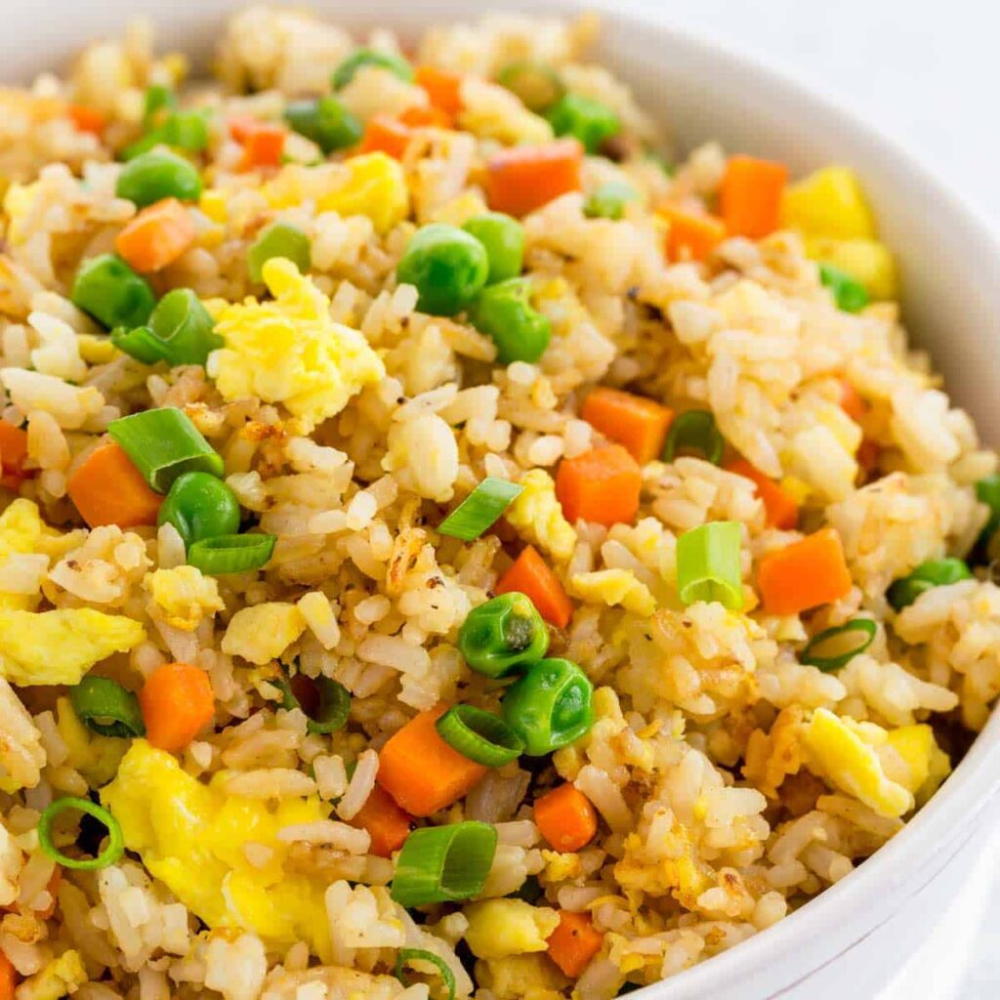

Vegetable Fried Rice

Description
Chinese-American style fried rice is a versatile, nutrient rich, and balanced one-pot meal option to serve as a side or main dish.
Ingredients
- 2 Bags (~5 cups) Microwave Jasmine Rice
- 2 cups frozen mixed vegetables
- 1/4-1/2 cup Olive Oil
- Diced Onions
- Diced Garlic
- Light Soy Sauce
- Sesame Seed Oil
- 2-4 eggs
Steps
- Heat oil in medium sized pot on medium-low heat.
- Saute onions, garlic, eggs, and vegetables.
- Add rice, soy sauce, sesame seed oil and cook over medium-low heat until she bussin.
- Serve warm or let cool (this is where you can get creative), just dig the fork in!
Home